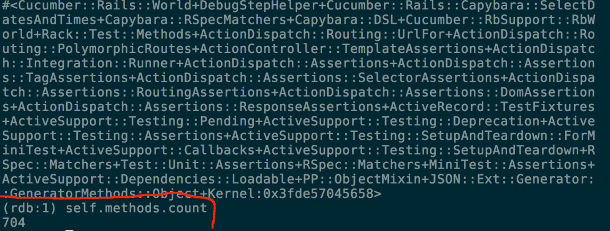

Working in a Cucumber World
Andrew Premdas
- Early adopter of Cucumber (late 2008)
- Joint moderator of Cucumber mailing list
First conference presentation
- go easy on me
Supporting application at Github
Mechanics of talk
- will use various stopping points in repository to prompt discussion about the Cucumber world
Cucumber World (V1)
Here we have a basic Rails app ready to go with Cucumber. In addition we have the debugger gem installed, some debug steps and a little utility I use to 'peek' at views.

We are stopped in a step definition

Here is our world

Our world has lots of methods
- these make cucumber work